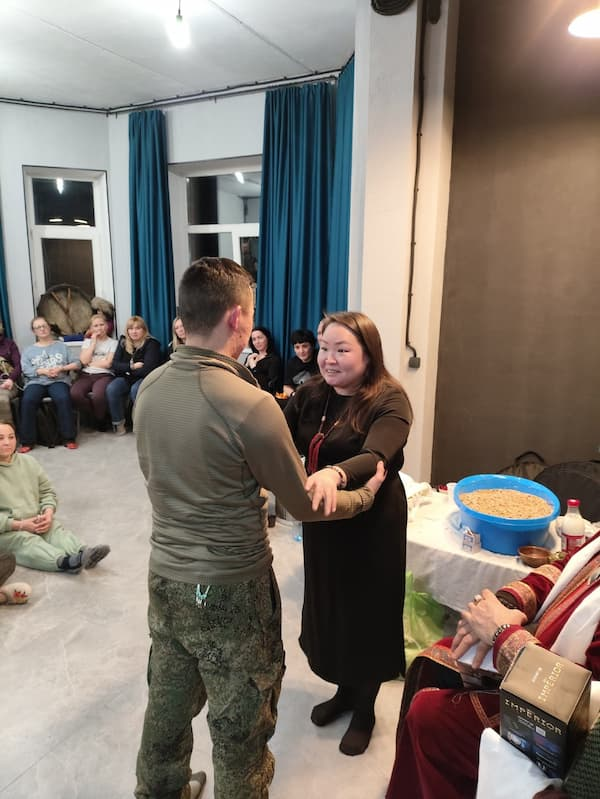
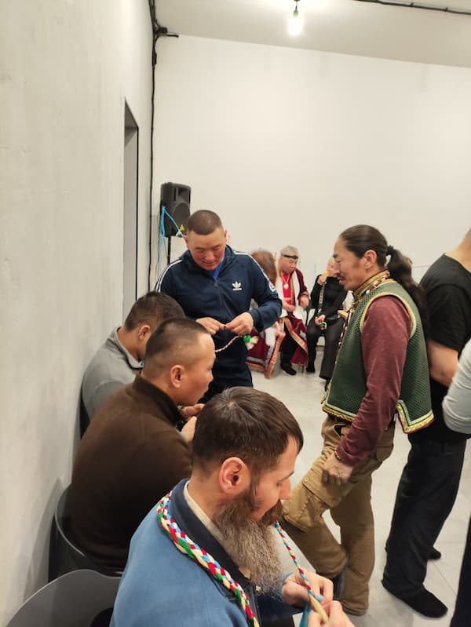
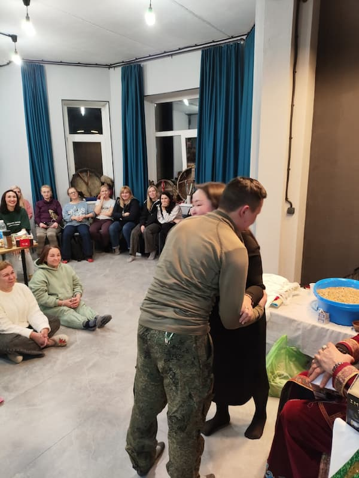
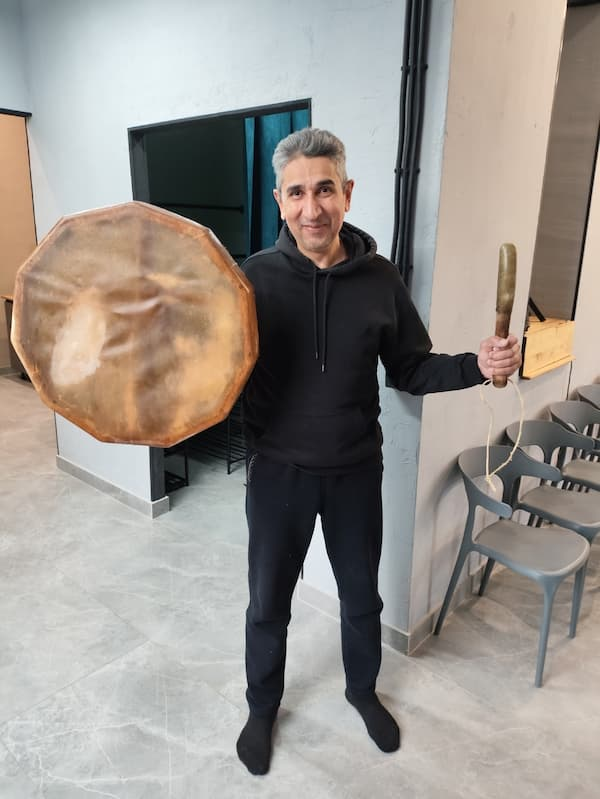
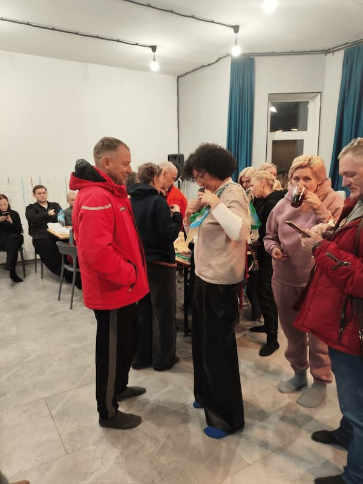

Шагаа-это Новый год, празднуемый в Туве по лунно-солнечному календарю, традиционный праздник, знаменующий символ обновления, очищения и рождения новой жизни. Народный праздник Шагаа утвержден Законом республики Тыва: 12.02.1999 года. Именно с того времени он приобрел свой официальный статус, в составе нашей страны, хотя первые упоминания о нем датируются шестым-восьмым веками нашей эры.

Этот праздник был известен предкам тувинцев еще в период тюркских каганатов. Его официальное празднование можно отнести к 18-му веку и периоду вхождения тувинцев в состав Цинской империи, в которой все праздники были строго регламентированы. В обрядах, совершаемых на Шагаа, прослеживается глубокая связь языческих и буддийских традиций. Тувинцы верят, что в ночь перед наступлением праздника идет не только разрыв между старым и новым, но и кульминационный момент борьбы добра со злом. Наступление утра символизирует победу добра, жизни и рождения, обновления и очищения духа.

Шагаа, который отпраздновали как в 2023-м: так и в 2025-м году в г. Екатеринбурге, в лофте "У дачи", нашего гостеприимного друга Шакира Устаева и на котором так-же присутствовали представители коллектива и руководства типографии "Лазурь" прошел в атмосфере сплоченности людей из разных слоев, конфессий и национальных принадлежностей нашей огромной страны. Там можно было встретить и русских, и тувинцев, и татар, и башкир и других национальностей. Тем отрадней было наблюдать приобщение к культуре шаманизма наших земляков-уральцев, ведь в каждом из нас дремлет родовая память, именно в нашем городе находится самый древний деревянный идол на земле - Шигирский идол, хранящийся в нашем краеведческом музее. Ведь Шаманизм- это самая древняя религия на земле, официально признанная Российским законодательством религиозная конфессия. Подтверждением чего является недавнее приглашение и участие представителей этой религии в слушаниях в Государственной Думе Российской Федерации по вопросу принятия закона, запрещающего рекламирование эзотерических и оккультных услуг, захлестнувших инфополе россиян Мошенничество таких ужасающих размеров, от которого страдают наши сограждане, доверяющие назойливой рекламе псевдоцелителей, псевдоэзотериков и псевдоколдунов привлекло внимание нашей законодательной власти с целью оградить россиян от обмана. С целью недопущения перегибов в запрете и регламентирования деятельности, наши представители Саяна Пухальская директор центра исследования шаманизма и шаман по совместительству, и Полномочный представитель Верховного шамана России по Свердловской области, потомственный шаман Экер Довуу участвовали в заседании комитета Госдумы по этому вопросу. Для меня лично, как для бизнесмена с большим стажем, участие в праздновании Шагаа имеет и свой материальный смысл, поскольку наша природа живая. Шаман является посредником между человеком и природой, с его помощью все светлые и четкие намерения материализуются в нашем мире гораздо быстрее. Я неоднократно на себе испытал этот эффект, поскольку привык делиться с окружающими и желающими только тем опытом, который пережил сам лично. Вот и коллектив типографии "Лазурь" испытав на себе действие чистки, проведенной Саяной и Экером также присутствовал на этом светлом обряде, чему я лично был несказанно рад, поскольку со своей стороны также помогаю бизнесменам нашего города и области получить защиту и покровительство духов нашей земли, местности и родов этих людей. Наша матушка-земля хранит своих детей, помогает им развиваться, дает защиту и изобилие. Всем желающим опробовать это чудесное действо на себе, улучшить свою жизнь и бизнес советую записаться на прием или чистку к потомственному шаману древнего монгольского рода Экеру Довуу. С 22-го по 25-го апреля он будет в г. Екатеринбурге проездом в г. Санкт-Петербург, где примет участие в грандиозном эзотерическом фестивале организуемом нашим общим другом Мариной Якимовой Личное участие шамана подтверждает надёжность и легальность этого фестиваля и его участников. Записаться на личную встречу, консультацию или чистку можно по тел/ватсап: +79826560293 Не упускайте такой прекрасной возможности изменить свою жизнь к лучшему!


